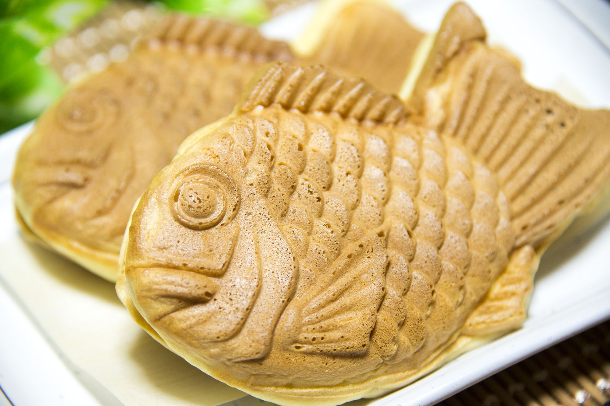

鯛魚燒

介紹
鯛魚燒（日語：たい焼き、鯛焼き／たいやき／タイヤキ），是一種源自日本東京，以麵粉、砂糖與小蘇打為材料，內包有紅豆泥或其他餡料，所製成形狀像鯛魚的一款和菓子[1]，衍生自今川燒。
作法
材料:鮮奶、低筋麵粉、雞蛋、蜂蜜 、酪梨油或無鹽溶化奶油、速發酵母、自製豆沙或紅豆餡
- 將酵母粉跟低筋麵粉放入塑膠袋，搖晃至均勻混合。
- 將雞蛋、鮮奶、糖，放入盆中，用打蛋器攪拌混合均勻，並加入【步驟1.】拌至盡量滑順、細緻，再加入液體油類。
- 蓋上保鮮膜鬆弛+發酵時間：室溫下:30(夏天)～60(冬天)分鐘，進冰箱前先用杓子攪拌麵糊，排出空氣。
- 放入冰箱低溫發酵12~15小時。
- 準備一個軟瓶，將低溫發酵好的麵糊填入瓶中。
- 加熱模具後，擠入適當麵糊（約底部8分滿），再填入餡料，餡料上方再補上蓋住餡料的麵糊，並蓋上蓋子。
- 蓋上後立刻翻轉機器約1分鐘，再翻正面，加熱約3-3分半，即可開蓋取出，放蒸架上散熱。